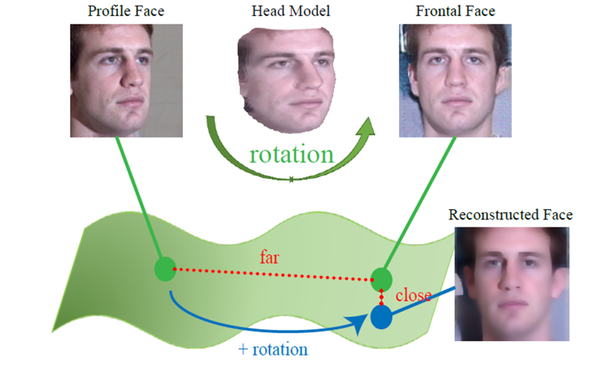

|
LARNet: Lie Algebra Residual Network for Face Recognition
|
|
Xiaolong Yang 1,2
Xiaohong Jia 1,2
Dihong Gong 3
Dong-Ming Yan 4,2
Zhifeng Li 3
Wei Liu 3
1 Academy of Mathematics and Systems Science of the Chinese Academy of Sciences (AMSS, CAS) 2 University of Chinese Academy of Sciences 3 Tencent Data Platform 4 National Laboratory of Pattern Recognition, Institute of Automation Chinese Academy of Sciences (NLPR,CASIA) |
|

Frontalization or rotation in the feature space. To show the equivalence, we reconstruct the images corresponding to the modified features (blue dot) and provide the visual results for the expected frontal faces. |
Abstract
Key Theory and Network Architecture
Visualization Results
/fig2_reconstructionface.png)
Our method is robust to many factors, including gender, head decoration (hat), and face decoration (glasses, beard). |
Experimental Results
|
Quantitative evaluation on the IJB-A dataset: verification and identification tasks with state of the arts. |
/fig4_CFP.png)
Quantitative evaluation on the CFP-FP dataset: profile face verification challenge. |
|
Quantitative evaluation on the LFW, YTF and CPLFW datasets: general face recognition. |